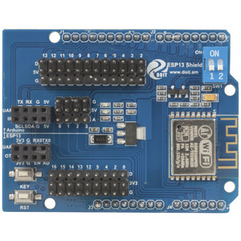
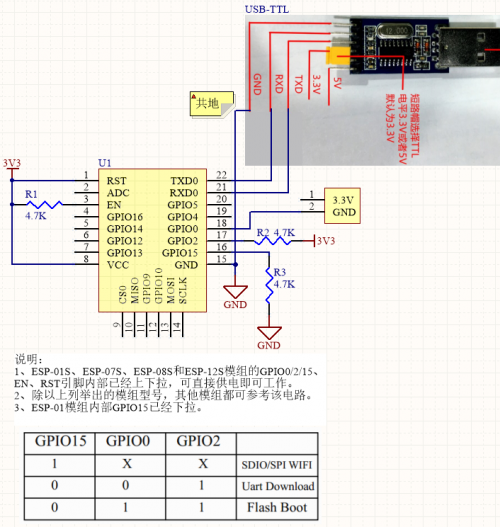
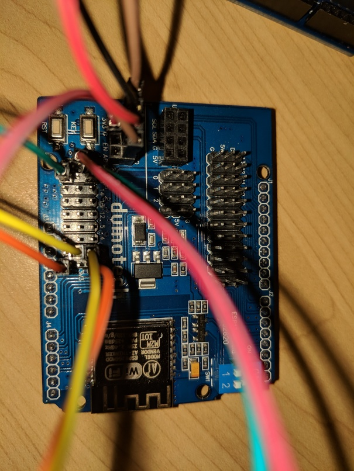

I recently picked up a Arduino Compatible ESP-13 Wifi Shield from Jaycar and had a bit of fun setting it up.

You communicate with the device over serial (and by default using the only hardware serial port on the arduino), by sending it AT commands, you can talk to it directly via an Arduino Uno by wiring up the pin D0 to RXD, D1 to TXD and GND and 3.3v on the arduino to the 3.3v and GND on the shield (under uart). Once wired up flash the arduino with a blank sketch and can talk to the shield using picocom with something like
Jaycar has a list of some of the commands used.
Updating the firmware
After connecting I ran AT+GMR which dumps the version information for the ESP8226 chip, which gave me the following
AT version:0.40.0.0(Aug 8 2015 14:45:58)
SDK version:1.3.0
Ai-Thinker Technology Co.,Ltd.
Build:1.3.0.2 Sep 11 2015 11:48:04The firmware that came on the shield is by a company called AiThinker unfortunately their website seems to be all in chinese, having a look at their firmware page it looked like there was a new version available, and something called AiCloud which seems to be some sort of IoT solution. Since im just interested in the AT version, I looked into flashing with a newer firmware their AT version is linked here.
Looking into what they’ve actually changed vs the normal firmware from espressif it seems they’ve added a few commands to deal with the GPIO pins (which it looks like the latest stock firmware has anyway), so instead I wanted to flash the latest stock firmware currently 2.2.0.

Reading through the documentation on the AIThinker site, the first step was to set the the chip into UART Download Mode.

This is accomplished by setting EN high (connect to one of the unused the 3.3v pins below it), GPIO15 to low GPIO2 to high and GPIO0 to low. After thats done hit reset and upon connecting should be greeted with:
ets Jan 8 2013,rst cause:2, boot mode:(1,7)Now it was ready to flash the latest firmware! Since the shield has 32Mbit Flash size and I wanted to flash the boot version of the rom (which allows OTA updating the firmware) for that I needed a tool to flash the firmware and as luck would have it Arch has esptool in the community repo
Repository : community
Name : esptool
Version : 2.2-1
Description : A cute Python utility to communicate with the ROM bootloader in Espressif ESP8266Following the docs in the latest espressif SDK (under the bin folder) and the esptool github I ran the following
$ esptool --port /dev/ttyACM0 write_flash \
0x0000 ./bin/boot_v1.7.bin \
0x1000 ./bin/at/512+512/user1.1024.new.2.bin \
0x3fc000 ./bin/esp_init_data_default_v08.bin \
0x7e000 ./bin/blank.bin \
0x3fe000 ./bin/blank.binwhich spat out
esptool.py v2.2
Connecting......
Detecting chip type... ESP8266
Chip is ESP8266EX
Uploading stub...
Running stub...
Stub running...
Configuring flash size...
Auto-detected Flash size: 4MB
...
Wrote 4096 bytes (26 compressed) at 0x003fe000 in 0.0 seconds (effective 3905.8 kbit/s)...
Hash of data verified.
Leaving...
Hard resetting...Great success! I removed the jumpers from the shield and hit the reset button.

Getting Serial0 back!
So one annoying thing was that the shield by default uses D0+D1 the Arduino Uno hardware serial pins by default, this means that you can’t use Serial for anything but the wifi shield when its enabled (its toggled by the two dip switches on the board). It also means you need to flick the toggles when you want to flash the sketch.
Luckily there’s a way around this! The Arduino has a Software Serial library which allows us to emulate the UART chip on other pins, with one unfortunate downside, we can only do it at 9600 baud (as far as I can tell). For my usecase this fine, but before we do that we need to tell the shield to also speak 9600 baud.
Looking at the AT command reference here specifically the section titled AT+UART_DEF—Default UART Configuration; Saved in the Flash it looks like we can set and save the baud rate by issuing:
AT+UART_DEF=9600,8,1,0,0Once this is set we can wire up the esp UART RXD/TXD pins to some free digital pins on the Arduino side (pins on top the shield). Then given something like the following
We have our serial back and also the ability to talk to the shield!